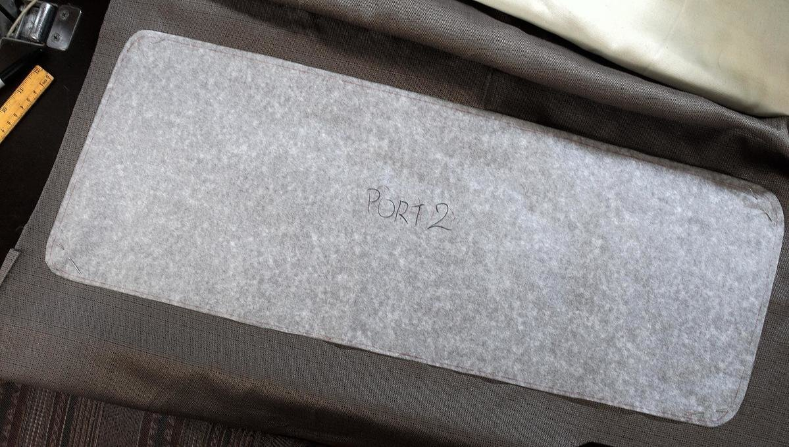

curtains
21.07.17
North Saanich BC, Canada.
Scroll down for more recent updates.
Our boat has very large windows, and to our dismay, it did not come with any means of attaching curtains.
For a while, we simply attached a bed sheet that we had cut to size. We installed 6 grommets. It helped to diffuse the light, but it had a loose fit, and made the boat appear much narrower than it was. We used a wooden rail on the ceiling to tie it up, but it stopped short of the 3rd window.
This year we decided to make custom curtains for each window, for privacy when we share a dock with others, to block out light on sunny mornings, and as a means of insulating the windows in the winter.
Below is an image featuring the curtain setup we had before:

We used velcro to attach them to the wall. We prefer to avoid making holes in fibreglass if we don't have to.
We made templates of our windows with wax paper (it's what we had, and it works well). The wax paper was the right height, covering the window entirely. We taped it up to the wall, and drew out the shape with a marker. Then, we cut along the line, and labelled each template.
We found curtains at a thrift store to use for this project. We laid out the fabric and placed our template on top, securing the template to the fabric with needles on the corners. We then measured, and marked a 3.5 cm border all around to accommodate both a 1 cm seam (to prevent unravelling) and a 2 cm strip of velcro with extra padding.
We cut the fabric along the line, and folded the seam, laying the sticky strip of velcro (soft side) over the folded seam. We stitched the velcro onto the fabric bottom and top edge using our sewing awl(speedy stitcher). The sides have no velcro, but we stitched the seams.

Then, we added strips of velcro (hook side) to the wall and installed the curtains. Easy!
They are removable, but we prefer to keep them on to avoid having to find a space to store them. We use little wooden clothes pins to secure the rolled up bits of fabric.

Updates
22.10.04 After spending our first summer on the boat with these curtains, we had to make a few changes. This design was perfectly appropriate for winter, but with a hot sun bearing down on the windows, we found that the glue holding the upper velcro strip to the wall was softening, causing the curtain to sag. Pino's windows are secured to the outside of the cabin with a black, high-strength adhesive. This adhesive is black, and when the sun hits that part of the window it gets hot and the heat transfers to the wall on the inside(that part of the cabin is thinner). The bottom strip of velcro didn't suffer this problem, because the backing is thicker. So, we cleaned off the glue, removed the top strip of velcro, and bought special little brass screws. It looks like we'll have to make holes in the boat after all.
We drilled holes in the wall and made little paracord loops that we stitched onto the top corners of the curtains, we can use these loops to secure the top part of the curtain to the brass screws. The bottom of the curtain is held fast by the same strip of velcro as before.
Also, instead of using clothes pins we made more little paracord loops and sitched them into the curtain itself to use as a tie-up point. In the image below, the second loop on the brass screw is the thing keeping the curtain rolled up. This was a good upgrade. We do try and avoid making holes in Pino, but sometimes we have to and it is worth it.